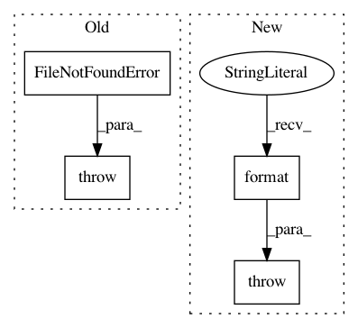

be8e63d4774207a94fa7d26f9f9e1f7f55f9e664,python/ray/tune/suggest/suggestion.py,Searcher,restore_from_dir,#Searcher#Any#,207
Before Change
if os.path.exists(checkpoint_path):
self.restore(checkpoint_path)
else:
raise FileNotFoundError(
"{filename} not found in {directory}. Unable to restore "
"searcher state from directory.".format(
filename=Searcher.CKPT_FILE, directory=checkpoint_dir))
@property
def metric(self):
The training result objective value attribute.
After Change
pattern = self.CKPT_FILE_TMPL.format("*")
full_paths = glob.glob(os.path.join(checkpoint_dir, pattern))
if not full_paths:
raise RuntimeError(
"Searcher unable to find checkpoint in {}".format(
checkpoint_dir)) // TODO
most_recent_checkpoint = max(full_paths)
self.restore(most_recent_checkpoint)
In pattern: SUPERPATTERN
Frequency: 4
Non-data size: 4
Instances
Project Name: ray-project/ray
Commit Name: be8e63d4774207a94fa7d26f9f9e1f7f55f9e664
Time: 2020-08-10
Author: rliaw@berkeley.edu
File Name: python/ray/tune/suggest/suggestion.py
Class Name: Searcher
Method Name: restore_from_dir
Project Name: snipsco/snips-nlu
Commit Name: 4c31d354b99c208ecac5bf9d8282bcb14ef1a3bf
Time: 2018-10-02
Author: adrien.ball@snips.ai
File Name: snips_nlu/builtin_entities.py
Class Name:
Method Name: find_gazetteer_entity_data_path
Project Name: IDSIA/sacred
Commit Name: 08f2736b28802df6b5044ae0d36bbed25e5686f6
Time: 2015-02-15
Author: qwlouse@gmail.com
File Name: sacred/experiment.py
Class Name: Ingredient
Method Name: add_config_file
Project Name: IndicoDataSolutions/finetune
Commit Name: b55f4e166376f6a636f3d2c2dd5809a9ce131370
Time: 2020-06-02
Author: benlt@hotmail.co.uk
File Name: finetune/saver.py
Class Name: Saver
Method Name: set_fallback